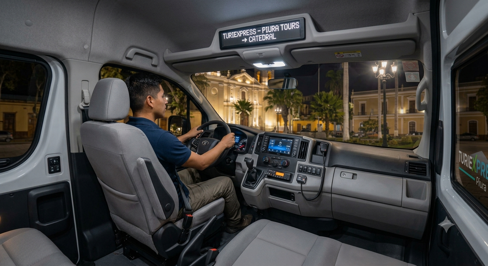
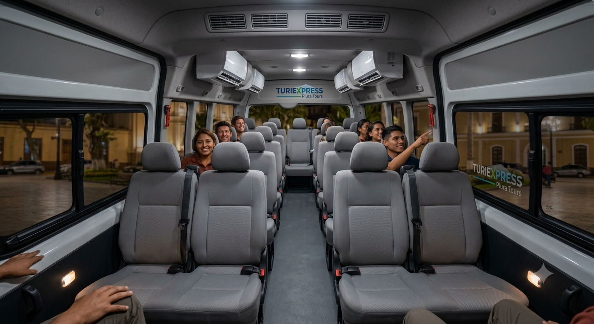
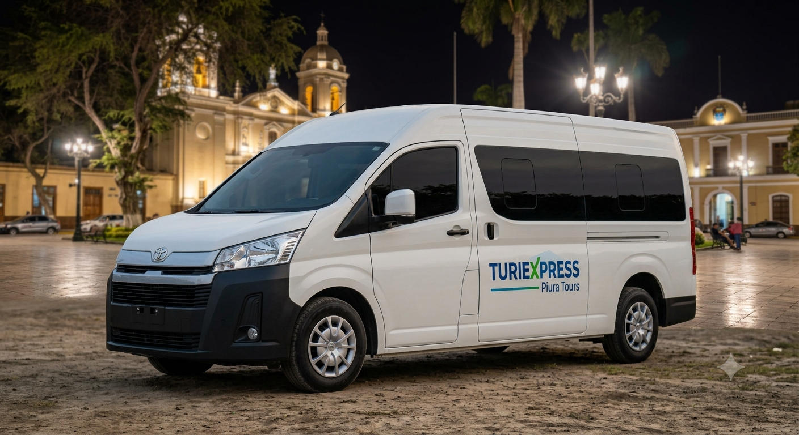
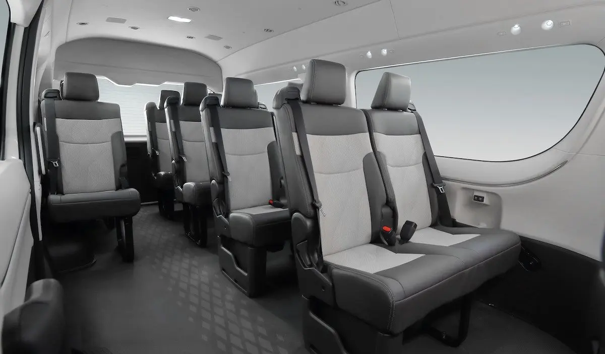

🌙 Piuranos de corazón
Turiexpress ofrece mini tours nocturnos diseñados para personas con poco tiempo libre. Nuestros recorridos combinan cultura, gastronomía y naturaleza en experiencias organizadas, seguras y de corta duración.
Turiexpress nació de una pregunta simple: ¿por qué los visitantes que llegan a Piura por trabajo nunca alcanzan a conocer la ciudad? Empezamos organizando recorridos nocturnos para colegas y amigos, y hoy abrimos esa experiencia a cualquier persona que quiera descubrir Piura sin alterar su jornada.
Ofrecer experiencias nocturnas auténticas, seguras y bien curadas que conecten a los visitantes con la gastronomía, la cultura y la naturaleza de Piura en pocas horas.
Convertirnos en la referencia principal de turismo nocturno local de Piura, reconocidos por transformar la percepción de que 'no hay nada qué hacer' en una oferta de experiencias seguras, organizadas y accesibles desde la Plaza de Armas para todos quienes tienen poco tiempo libre.
Grupos pequeños, trato personalizado y guías piuranos que te cuentan la ciudad como a un amigo.
Trabajamos con familias, cocineros y artesanos locales para que la experiencia sea genuina.
Transporte privado, protocolos claros y atención permanente durante todo el recorrido.
Tours compactos de 4 a 6 horas diseñados para quienes vienen por trabajo o tienen poco tiempo.
Todos los tours inician en la Plaza de Armas de Piura. Te recomendamos llegar 10 minutos antes de la hora indicada.
Unidades modernas con aire acondicionado, mantenimiento al día y capacidad para grupos pequeños.




Reserva tu tour y descubre la ciudad en una sola noche.
Reservar ahora